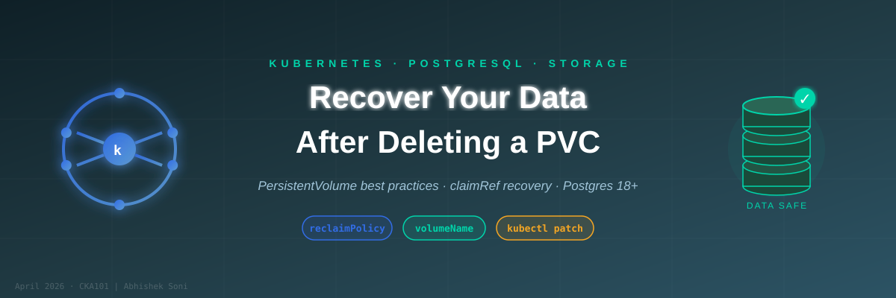

How to Recover Kubernetes Postgres Data After Accidentally Deleting a Deployment and PVC

A real-world survival guide with best practices for PersistentVolume and PersistentVolumeClaim management in Kubernetes.
Table of Contents
- The Scenario — What Went Wrong
- Understanding PV, PVC and the Lifecycle
- Best Practices When Declaring PV and PVC
- Setting Up — Full Working Manifests
- Creating a Database in PostgreSQL
- Simulating the Accident — Deleting Deployment and PVC
- Recovering the Data
- Verifying the Data is Back
- Summary Cheat Sheet
1. The Scenario — What Went Wrong
You have a PostgreSQL pod running in Kubernetes, backed by a PersistentVolume. One day you (or a teammate) accidentally run:
kubectl delete deployment db-deployment -n ckakubectl delete pvc db-pvc -n cka```
💥 The pod is gone. The PVC is gone. Your database seems lost.
**But is it really?**
Not necessarily — if you set up your PersistentVolume with the right `reclaimPolicy`, your data is still sitting safely on disk. This guide shows you exactly how to get it back, and more importantly, how to set things up correctly so you never truly lose data again.
---
## 2. Understanding PV, PVC and the Lifecycle
### PersistentVolume (PV)
A PV is a piece of storage provisioned in the cluster. It exists independently of any pod or deployment. Think of it as a physical hard drive.
### PersistentVolumeClaim (PVC)
A PVC is a *request* for storage by a user. It binds to a PV. Think of it as plugging a cable into that hard drive.
### The Binding Lifecycle
PV (Available) → PVC created → PV (Bound) → Pod uses PVC → Pod/PVC deleted → PV (Released or Deleted)
### Reclaim Policies — The Critical Setting
| Policy | What happens when PVC is deleted |
|--------|----------------------------------|
| `Retain` | ✅ PV survives, data is safe — manual cleanup required |
| `Delete` | ❌ PV and underlying storage are deleted automatically |
| `Recycle` | ⚠️ Deprecated — basic scrub, makes PV available again |
> 🔑 **Golden Rule:** Always use `Retain` for production or important data.
---
## 3. Best Practices When Declaring PV and PVC
### ✅ DO: Use `Retain` Reclaim Policy
```yaml
persistentVolumeReclaimPolicy: Retain
✅ DO: Pin the PVC to a specific PV using volumeName
Without this, Kubernetes will bind your PVC to any available matching PV — including dynamically provisioned ones you didn’t intend. Always be explicit:
spec:
volumeName: db-pv # ← Force bind to your specific PV
✅ DO: Use explicit hostPath.type
hostPath:
path: "/data/db" type: DirectoryOrCreate
✅ DO: Match storageClassName exactly between PV and PVC
# Both PV and PVC must have:
storageClassName: standard
✅ DO: Pin your image tag — never use latest for stateful workloads
image: postgres:18 # ✅ Pinned# image: postgres:latest ❌ Dangerous — can pull a breaking major version
❌ DON’T: Mount at /var/lib/postgresql/data with Postgres 18+
Postgres 18+ changed its data directory layout. The volume must be mounted at the parent directory:
# ❌ Broken for Postgres 18+mountPath: /var/lib/postgresql/data
# ✅ Correct for Postgres 18+mountPath: /var/lib/postgresql
4. Setting Up — Full Working Manifests
db-volumes.yaml
kind: PersistentVolume
apiVersion: v1
metadata:
name: db-pvspec:
capacity: storage: 1Gi accessModes: - ReadWriteOnce persistentVolumeReclaimPolicy: Retain # ✅ Data survives PVC deletion storageClassName: standard hostPath: path: "/mnt/c/CKA" type: DirectoryOrCreate---
apiVersion: v1
kind: PersistentVolumeClaim
metadata:
name: db-pvc namespace: ckaspec:
accessModes: - ReadWriteOnce resources: requests: storage: 1Gi storageClassName: standard volumeName: db-pv # ✅ Bind explicitly to our PV
db-deployment.yaml
apiVersion: apps/v1
kind: Deployment
metadata:
name: db-deployment namespace: ckaspec:
replicas: 1 selector: matchLabels: app: db template: metadata: labels: app: db spec: containers: - name: db-container image: postgres:18 # ✅ Pinned image tag ports: - containerPort: 5432 env: - name: POSTGRES_USER value: "admin" - name: POSTGRES_PASSWORD value: "password" - name: POSTGRES_DB value: "mydatabase" volumeMounts: - name: db-storage mountPath: /var/lib/postgresql # ✅ Parent path for Postgres 18+ volumes: - name: db-storage persistentVolumeClaim: claimName: db-pvc
Apply both:
kubectl apply -f db-volumes.yamlkubectl apply -f db-deployment.yaml```
Verify the PVC binds to **your** PV (not a dynamically provisioned one):
```bash
kubectl get pvc,pv -n cka```
Expected output:
NAME STATUS VOLUME CAPACITY STORAGECLASS
db-pvc Bound db-pv 1Gi standard
NAME RECLAIM POLICY STATUS CLAIM
db-pv Retain Bound cka/db-pvc
---
## 5. Creating a Database in PostgreSQL
Once your pod is running, create additional databases using `psql`.
### Step 1 — Verify pod is running
```bash
kubectl get pods -n cka -l app=db
Step 2 — Open an interactive psql shell
kubectl exec -it deploy/db-deployment -n cka -- psql -U admin -d mydatabase -W```
You'll be prompted for the password (`password`).
### Step 3 — Create a new database
```sql
CREATE DATABASE db1;
Step 4 — List all databases to confirm
\l
Output:
Name | Owner------------+---------
db1 | admin ✅ newly created mydatabase | admin ✅ auto-created at init postgres | postgres```
### Step 5 — Exit psql
```sql
\q
One-liner (non-interactive)
kubectl exec deploy/db-deployment -n cka -- psql -U admin -d mydatabase -c "CREATE DATABASE db1;"```
---
## 6. Simulating the Accident — Deleting Deployment and PVC
```bash
kubectl delete deployment db-deployment -n ckakubectl delete pvc db-pvc -n cka```
Now check the PV:
```bash
kubectl get pv```
NAME CAPACITY RECLAIM POLICY STATUS CLAIM
db-pv 1Gi Retain Released cka/db-pvc
- Status is `Released` — **not deleted** ✅
- Data is still on disk at `/mnt/c/CKA` ✅
- But it cannot be claimed by a new PVC yet ⚠️
---
## 7. Recovering the Data
The PV has a stale `claimRef` pointing to the deleted PVC. Clear it first.
### Step 1 — Remove the stale claimRef
You have two options — use whichever you prefer:
**Option A — Patch (one-liner, scriptable):**
```bash
kubectl patch pv db-pv --type=json -p='[{"op": "remove", "path": "/spec/claimRef"}]'
Option B — Manual edit (interactive, great for learning):
kubectl edit pv db-pv```
This opens the PV manifest in your default editor. Find and **delete** the entire `claimRef` block:
```yaml
# DELETE these lines:
claimRef: apiVersion: v1 kind: PersistentVolumeClaim name: db-pvc namespace: cka resourceVersion: "12345" uid: d91938f6-66cf-4c0a-b55f-f501e4d5bcfb
Save and close the editor. Kubernetes will immediately update the PV.
💡 Tip: The
claimRefblock appears underspec:in the manifest. Delete all lines fromclaimRef:down to (and including) theuid:line.
Step 2 — Verify PV is Available
kubectl get pv db-pv```
NAME CAPACITY RECLAIM POLICY STATUS CLAIM
db-pv 1Gi Retain Available
### Step 3 — Re-apply PVC and Deployment
```bash
kubectl apply -f db-volumes.yamlkubectl apply -f db-deployment.yaml```
### Step 4 — Watch the rollout
```bash
kubectl -n cka rollout status deployment/db-deployment```
---
## 8. Verifying the Data is Back
Connect to Postgres and confirm your databases survived:
```bash
kubectl exec -it deploy/db-deployment -n cka -- psql -U admin -d mydatabase -W```
Inside psql:
```sql
\l
Name | Owner------------+---------
db1 | admin ✅ Still here! mydatabase | admin ✅ Still here!```
Switch to a specific database and check tables:
```sql
\c db1
\dt
SELECT * FROM your_table;
\q
9. Summary Cheat Sheet
Setup Best Practices
| # | Practice | Detail |
|---|---|---|
| ✅ | reclaimPolicy: Retain on PV |
Data survives PVC deletion |
| ✅ | volumeName: <pv-name> in PVC |
Prevents binding to wrong dynamic PV |
| ✅ | Pin image tag (postgres:18) |
Avoid breaking changes from latest |
| ✅ | Mount at /var/lib/postgresql |
Required for Postgres 18+ layout |
When Accident Happens
| PV Status after PVC deleted | Data Safe? |
|---|---|
Released |
✅ Yes — PV still exists, recover using steps below |
Deleted |
❌ No — underlying storage was wiped |
Recovery Steps
| Step | Command |
|---|---|
| 1. Remove stale claimRef (patch) | kubectl patch pv db-pv --type=json -p='[{"op":"remove","path":"/spec/claimRef"}]' |
| 1. Remove stale claimRef (edit) | kubectl edit pv db-pv → delete the claimRef: block |
| 2. Verify PV is Available | kubectl get pv db-pv |
| 3. Re-apply volumes | kubectl apply -f db-volumes.yaml |
| 4. Re-apply deployment | kubectl apply -f db-deployment.yaml |
| 5. Verify correct binding | kubectl get pvc,pv -n cka → db-pvc must show VOLUME = db-pv |
PostgreSQL Quick Commands
| Action | Command |
|---|---|
| Connect (interactive) | kubectl exec -it deploy/db-deployment -n cka -- psql -U admin -d mydatabase -W |
| Create database | CREATE DATABASE db1; |
| List all databases | \l |
| Switch database | \c db1 |
| List tables | \dt |
| Exit psql | \q |
Written based on a real Kubernetes lab session using Minikube on Windows/WSL with PostgreSQL 18. All manifests tested and verified.